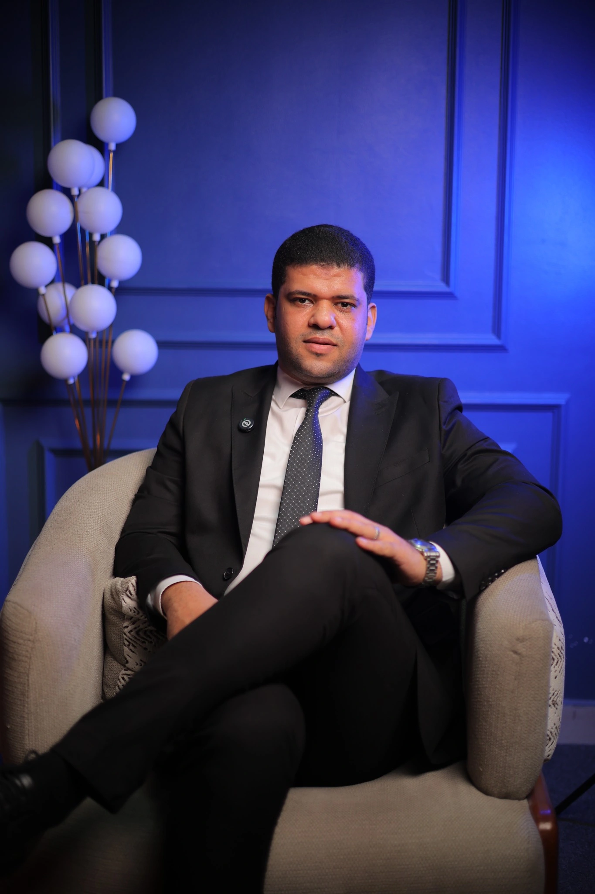
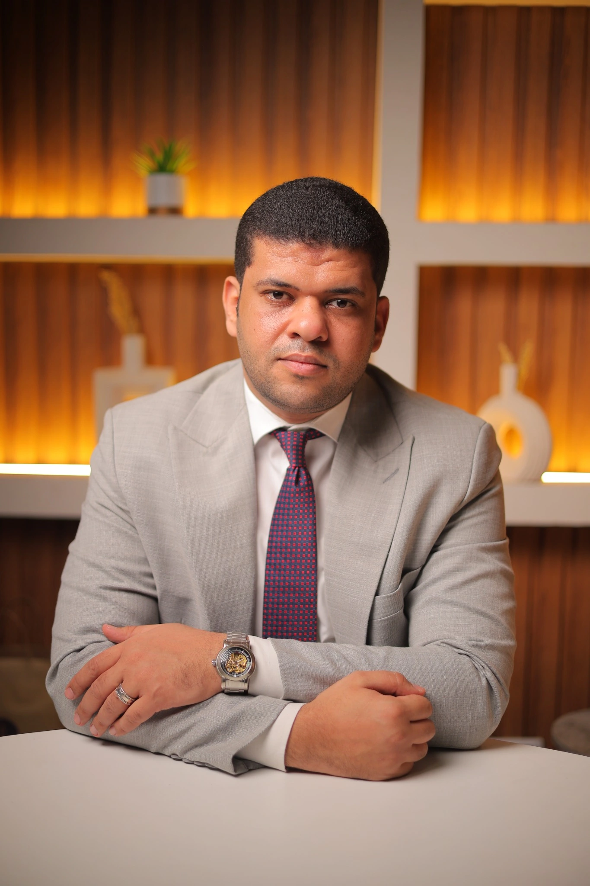

الفرع الأول – فيصل
٢٠٧ شارع فيصل الرئيسي – برج الصفوة الإداري – أعلى حلواني إيتوال – محطة الطوابق
فتح الموقع على خرائط جوجل ↗مكتب سليمان للمحاماة والاستشارات القانونية. خدمات قانونية للأفراد والشركات، واهتمام دقيق بحقوقك ومصالحك في كل خطوة.

نعمل على تقديم الخدمات والاستشارات القانونية وفق دراسة طبيعة كل مسألة، مع الاهتمام بخصوصية الموكل ووضوح الإجراءات ونطاق العمل.
نسعى إلى مساعدة الأفراد والشركات على فهم خياراتهم القانونية واتخاذ قرارات مدروسة.

باحث الدكتوراه في القانون، ماجستير القانون. يجمع بين الخبرة المهنية والبحث الأكاديمي، مع اهتمام بتطوير المنظومة القانونية والمساهمة في إعداد المقترحات والرؤى التشريعية.
عضو باتحاد المحامين العرب والاتحاد الدولي للمحامين (UIA).
تعرّف على مجالات عمل المكتب واختر الخدمة المناسبة لاحتياجك.
لا توجد خدمات مطابقة للبحث.
مسار مقترح للتعامل مع الطلبات القانونية حسب طبيعة كل قضية.
فهم احتياج الموكل وتحديد موضوع الطلب.
مراجعة المعلومات والمستندات ذات الصلة.
تحديد نطاق العمل والخطوات والأتعاب.
متابعة الإجراءات المتفق عليها وإبلاغ الموكل بالمستجدات.
يسعدنا استقبال طلبك والتواصل معك بشأن الخطوات المناسبة.
تعرّف على عناوين فروعنا في الجيزة واختر الفرع الأنسب لك.
٢٠٧ شارع فيصل الرئيسي – برج الصفوة الإداري – أعلى حلواني إيتوال – محطة الطوابق
فتح الموقع على خرائط جوجل ↗٦٩ برج سوتير – شارع ربيع الجيزي – أمام محكمة جنوب الجيزة
فتح الموقع على خرائط جوجل ↗تتطلب الخرائط اتصالًا بالإنترنت. يمكن فتح موقع كل فرع مباشرة باستخدام الزر المخصص.